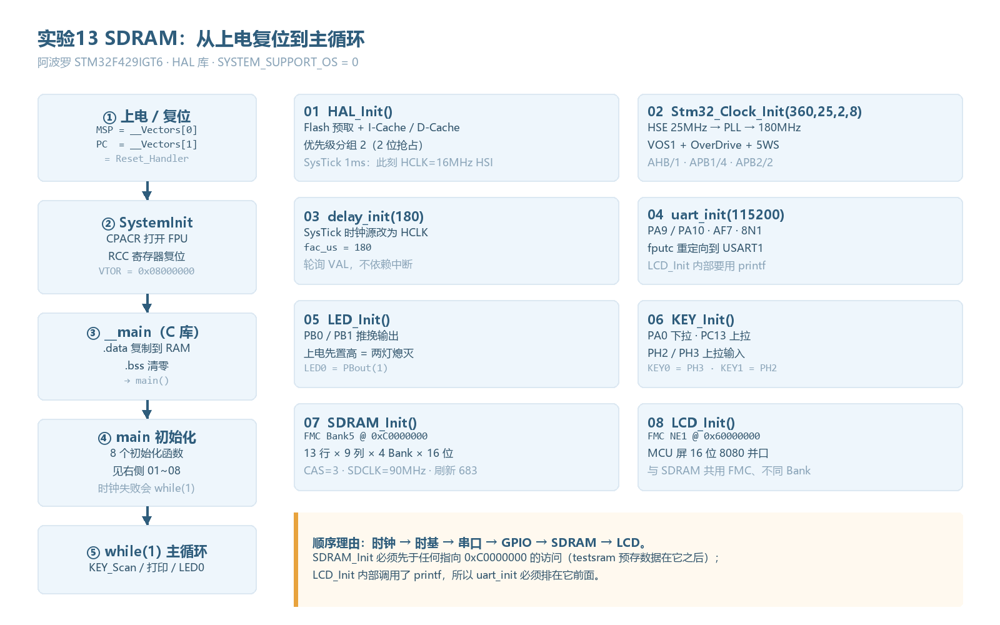
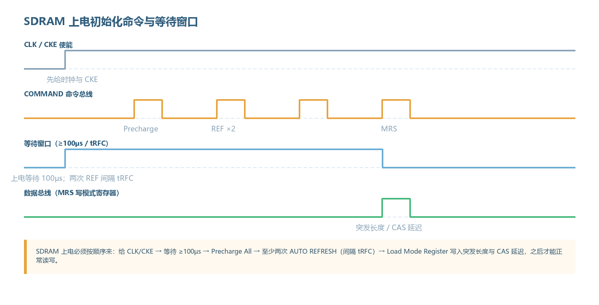
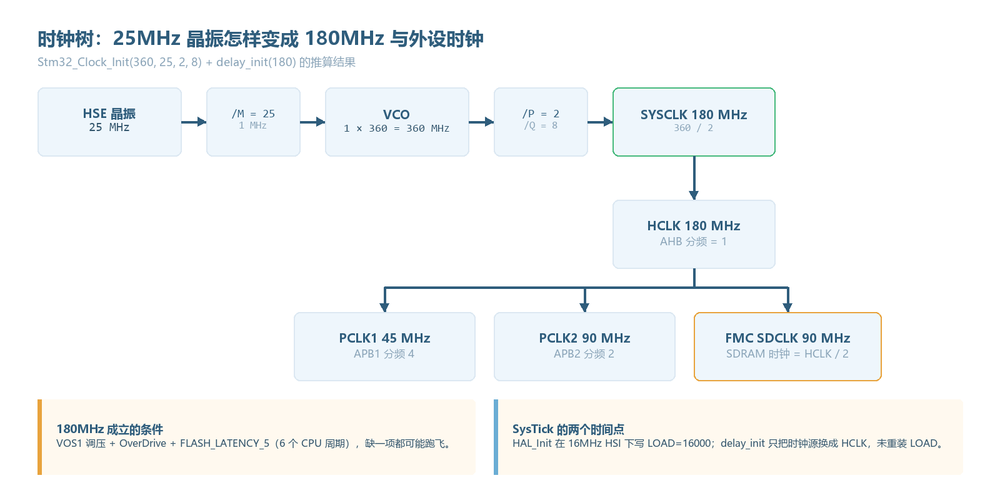
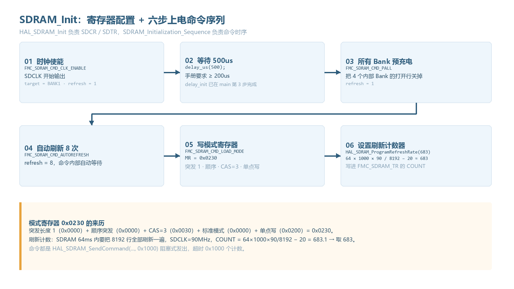
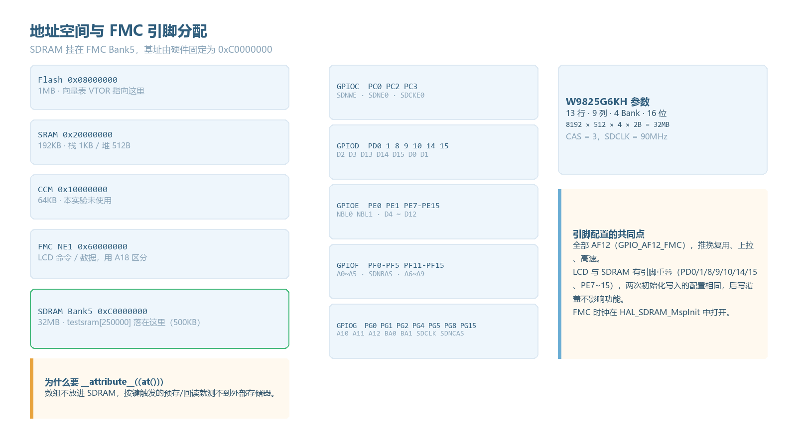
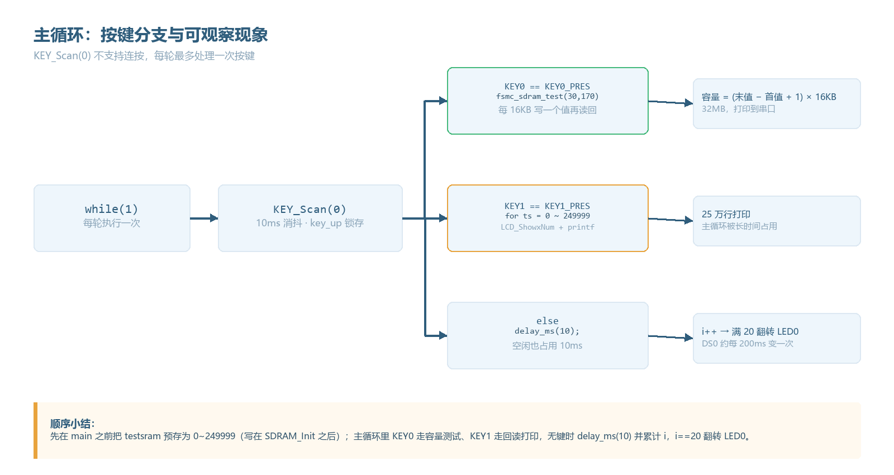

01 工程概述与硬件资源
实验13 与相邻实验的最大差别在存储器：实验12 用 FMC 的 NE1 挂 MCU 屏，本实验用 FMC Bank5 挂一片 32MB SDRAM（W9825G6KH），并把一个 500KB 的数组直接定位到 SDRAM 起始地址 0xC0000000，按 KEY0 验证容量、按 KEY1 回读预存数据。
| 资源 | 引脚 / 接口 | 在本实验中的作用 |
|---|---|---|
| DS0（红灯） | PB1 | 主循环每 20 圈翻转一次，指示程序没卡死 |
| KEY0 | PH3 | 触发容量测试 fsmc_sdram_test() |
| KEY1 | PH2 | 回读并打印 testsram[0..249999] |
| 串口 1 | PA9 / PA10，115200 8N1 | 打印容量与回读数据；同时给 printf 提供出口 |
| MCU 屏 | FMC NE1，16 位 8080 并口 | 显示提示信息与容量结果 |
| 外部 SDRAM | FMC Bank5，0xC0000000 | 32MB，13 行 × 9 列 × 4 Bank × 16 位 |
LCD_Init() 内部调用了 printf，若没有先初始化串口 1，会导致液晶不显示。这条提示直接决定了 main 里的初始化顺序。02 目录与文件分工
| 文件 | 负责什么 | 本页关注点 |
|---|---|---|
| CORE/startup_stm32f429xx.s | 栈堆定义、向量表、Reset_Handler | 初始 MSP、复位后第一条指令 |
| USER/system_stm32f4xx.c | SystemInit()：FPU、RCC 复位、VTOR | 时钟切换前的现场 |
| USER/main.c | 初始化调用顺序、容量测试、主循环 | 整条启动链的主线 |
| SYSTEM/sys/sys.c | Stm32_Clock_Init() | 25MHz → 180MHz 的 PLL 参数 |
| SYSTEM/delay/delay.c | delay_init/us/ms | SysTick 计数方式 |
| SYSTEM/usart/usart.c | uart_init() 与 fputc 重定向 | printf 的落地路径 |
| HARDWARE/SDRAM/sdram.c | FMC 配置、上电命令序列、读写缓冲 | 本实验的核心 |
| HARDWARE/LCD/lcd.c | MCU 屏初始化（FMC NE1） | 与 SDRAM 共用 FMC |
| HARDWARE/KEY、LED | 按键与指示灯驱动 | 主循环的输入输出 |
| HALLIB/... | HAL 驱动库 | 只看被调用到的 HAL 函数 |
USE_HAL_DRIVER, STM32F429xx，器件 STM32F429IGTx（1MB Flash / 192KB SRAM / 64KB CCM），所以外扩 SDRAM 才有实际意义。03 启动流程总览


上电顺序不能省：先给 CLK 与 CKE，等待 ≥100µs，再发 Precharge All、至少两次 AUTO REFRESH（间隔 tRFC），最后 Load Mode Register 写入突发长度与 CAS 延迟。少任何一步，后续读写都会读到随机值。
main 函数（源码原文）
int main(void)
{
u8 key; u8 i=0; u32 ts=0;
HAL_Init(); //初始化HAL库
Stm32_Clock_Init(360,25,2,8); //设置时钟,180Mhz
delay_init(180); //初始化延时函数
uart_init(115200); //初始化USART
LED_Init(); //初始化LED
KEY_Init(); //初始化按键
SDRAM_Init(); //初始化SDRAM
LCD_Init(); //初始化LCD
POINT_COLOR=RED; //设置字体为红色
... //LCD 显示 5 行提示信息，省略
for(ts=0;ts<250000;ts++) testsram[ts]=ts; //预存测试数据
while(1) { ... }
}
顺序不是随手排的：HAL_Init 建立时基与中断分组 → 时钟不起来，串口和 FMC 的分频都无从计算 → delay_init 让后面的 500µs 等待可用 → 串口先于 LCD（LCD 内部用 printf）→ SDRAM 先于任何 0xC0000000 访问 → 最后才初始化 LCD。
04 启动文件与向量表
栈与堆
Stack_Size EQU 0x400; ; 1KB 栈 AREA STACK, NOINIT, READWRITE, ALIGN=3 Stack_Mem SPACE Stack_Size __initial_sp Heap_Size EQU 0x200; ; 512B 堆 AREA HEAP, NOINIT, READWRITE, ALIGN=3 __heap_base Heap_Mem SPACE Heap_Size __heap_limit
__Vectors[0] 存的就是 __initial_sp（栈顶，由链接器放在 RAM 顶端，按 192KB SRAM 推算约 0x20030000），__Vectors[1] 存 Reset_Handler。复位时内核自动把这两个值装入 MSP 与 PC，此时还没有任何 C 环境。
复位入口
Reset_Handler PROC
EXPORT Reset_Handler [WEAK]
IMPORT SystemInit
IMPORT __main
LDR R0, =SystemInit
BLX R0
LDR R0, =__main
BX R0
ENDP
顺序固定为 SystemInit → __main。启动文件本身没有自定义汇编：.data 的复制与 .bss 的清零都在 __main（ARM C 库）里完成，完成后才跳进 main()。
[WEAK] + B .（死循环）。工程在 USER/stm32f4xx_it.c 里重新实现了 NMI_Handler、HardFault_Handler、SysTick_Handler 等，链接时用强符号覆盖弱符号——这就是“同名函数能接管中断”的机制。05 SystemInit 与 HAL_Init
SystemInit：复位现场 + FPU + 向量表位置
void SystemInit(void)
{
#if (__FPU_PRESENT == 1) && (__FPU_USED == 1)
SCB->CPACR |= ((3UL << 10*2)|(3UL << 11*2)); /* CP10/CP11 全访问，开 FPU */
#endif
RCC->CR |= (uint32_t)0x00000001; /* 开 HSI，先把时钟拉回默认 */
RCC->CFGR = 0x00000000;
RCC->CR &= (uint32_t)0xFEF6FFFF; /* 关 HSEON/CSSON/PLLON */
RCC->PLLCFGR = 0x24003010;
RCC->CIR = 0x00000000;
SCB->VTOR = FLASH_BASE | VECT_TAB_OFFSET; /* 0x08000000 */
}
复位后芯片跑的是内部 HSI 16MHz。SystemInit 把 RCC 全部还原成复位值，只保证“能跑”，真正的 180MHz 要等 main 里的 Stm32_Clock_Init。VTOR 被显式写成 Flash 基址，说明本工程没有做 Bootloader 重定位。
HAL_Init：三件事
| 动作 | 源码 | 影响 |
|---|---|---|
| Flash 加速 | __HAL_FLASH_INSTRUCTION_CACHE_ENABLE() 等三个宏 | I/D Cache + 预取，180MHz 下取指不拖后腿 |
| 中断分组 | HAL_NVIC_SetPriorityGrouping(NVIC_PRIORITYGROUP_2) | 2 位抢占 + 2 位子优先级，后面 HAL_NVIC_SetPriority 都按这个解释 |
| HAL 时基 | HAL_InitTick(TICK_INT_PRIORITY) | SysTick 1ms，优先级 0x0F |
16000000，所以 HAL_SYSTICK_Config(HAL_RCC_GetHCLKFreq()/1000) 算出的重装值是 16000。这个数字在时钟切到 180MHz 后没有重算，是第 06 节要讲的伏笔。06 时钟树与 Flash 等待

关键参数（源码取值）
RCC_OscInitStructure.PLL.PLLSource=RCC_PLLSOURCE_HSE; //HSE 作为 PLL 源 RCC_OscInitStructure.PLL.PLLM=pllm; //25 RCC_OscInitStructure.PLL.PLLN=plln; //360 RCC_OscInitStructure.PLL.PLLP=pllp; //2 RCC_OscInitStructure.PLL.PLLQ=pllq; //8 ret=HAL_PWREx_EnableOverDrive(); //开启 Over-Driver RCC_ClkInitStructure.APB1CLKDivider=RCC_HCLK_DIV4; RCC_ClkInitStructure.APB2CLKDivider=RCC_HCLK_DIV2; ret=HAL_RCC_ClockConfig(&RCC_ClkInitStructure,FLASH_LATENCY_5);
| 量 | 算式 | 结果 |
|---|---|---|
| VCO 频率 | 25MHz ÷ PLLM(25) × PLLN(360) | 360MHz |
| SYSCLK | 360 ÷ PLLP(2) | 180MHz |
| USB / SDIO / RNG | 360 ÷ PLLQ(8) | 45MHz |
| HCLK | 180 ÷ AHB 分频 1 | 180MHz |
| PCLK1（APB1） | 180 ÷ 4 | 45MHz |
| PCLK2（APB2） | 180 ÷ 2 | 90MHz |
| FMC SDCLK | HCLK ÷ 2（FMC_SDRAM_CLOCK_PERIOD_2） | 90MHz |
180MHz 不是写个参数就能跑：电压等级要先设 PWR_REGULATOR_VOLTAGE_SCALE1，再开 Over-Drive，最后 HAL_RCC_ClockConfig 必须带 FLASH_LATENCY_5（6 个 CPU 周期）。三者缺一，CPU 取指跟不上 180MHz，表现为随机死机或进 HardFault。
delay_init() 只把时钟源切成 HCLK，并没有重写 SysTick->LOAD。结果 HAL 的 1ms 中断实际只有约 88.9µs（16000 ÷ 180MHz），HAL_Delay() 会偏快约 11 倍。本实验全程用自己写的 delay_ms/delay_us，所以看不到这个问题。07 delay 延时与串口 printf
void delay_init(u8 SYSCLK)
{
HAL_SYSTICK_CLKSourceConfig(SYSTICK_CLKSOURCE_HCLK); //SysTick 时钟 = HCLK
fac_us=SYSCLK; //fac_us = 180
}
void delay_us(u32 nus)
{
u32 ticks; u32 told,tnow,tcnt=0;
u32 reload=SysTick->LOAD;
ticks=nus*fac_us; //需要的计数值
told=SysTick->VAL;
while(1)
{
tnow=SysTick->VAL;
if(tnow!=told)
{
if(tnow<told) tcnt+=told-tnow; //递减计数器
else tcnt+=reload-tnow+told; //跨过重装点
told=tnow;
if(tcnt>=ticks) break;
}
}
}
void delay_ms(u16 nms) { u32 i; for(i=0;i<nms;i++) delay_us(1000); }
delay_us 是纯轮询：不使能中断、不依赖 uwTick，所以可以在中断里安全调用；delay_ms 只是把 us 延时循环 n 次，精度取决于 fac_us 与主频是否一致。
串口 1 参数
| 项 | 取值 | 说明 |
|---|---|---|
| 实例 | USART1 | 挂在 APB2（90MHz） |
| 引脚 | PA9 / PA10，GPIO_AF7_USART1 | 复用推挽 + 上拉，接板载 CH340 |
| 帧格式 | 8 数据位 / 1 停止位 / 无校验 / 无流控 | 对应 UART_WORDLENGTH_8B 等 |
| 波特率 | 115200 | 由 uart_init(115200) 传入 |
| 接收中断 | 使能 RXNE，优先级 3,3 | HAL_UART_Receive_IT 那行被注释掉了 |
int fputc(int ch, FILE *f)
{
while((USART1->SR&0X40)==0); //等 TXE
USART1->DR = (u8) ch;
return ch;
}
#pragma import(__use_no_semihosting) + 自定义 fputc 让 printf 直接走 USART1，不需要勾选 MicroLIB。也正因为 LCD_Init() 内部用了 printf，串口必须在 LCD 之前初始化，否则程序会卡在 while((USART1->SR&0X40)==0)。08 GPIO：LED 与按键
void LED_Init(void)
{
GPIO_InitTypeDef GPIO_Initure;
__HAL_RCC_GPIOB_CLK_ENABLE(); //开启GPIOB时钟
GPIO_Initure.Pin=GPIO_PIN_0|GPIO_PIN_1;
GPIO_Initure.Mode=GPIO_MODE_OUTPUT_PP; //推挽输出
GPIO_Initure.Pull=GPIO_PULLUP;
GPIO_Initure.Speed=GPIO_SPEED_HIGH;
HAL_GPIO_Init(GPIOB,&GPIO_Initure);
HAL_GPIO_WritePin(GPIOB,GPIO_PIN_0,GPIO_PIN_SET); //默认熄灭
HAL_GPIO_WritePin(GPIOB,GPIO_PIN_1,GPIO_PIN_SET);
}
| 引脚 | 模式 | 上下拉 | 对应 |
|---|---|---|---|
| PB1 / PB0 | 推挽输出 | 上拉 | DS0 / DS1，输出高 = 灭 |
| PA0 | 输入 | 下拉 | WK_UP，按下为高 |
| PC13 | 输入 | 上拉 | KEY2，按下为低 |
| PH2 / PH3 | 输入 | 上拉（沿用上一条的 Pull） | KEY1 / KEY0，按下为低 |
u8 KEY_Scan(u8 mode)
{
static u8 key_up=1; //按键松开标志
if(mode==1)key_up=1; //支持连按
if(key_up&&(KEY0==0||KEY1==0||KEY2==0||WK_UP==1))
{
delay_ms(10); //10ms 消抖
key_up=0;
if(KEY0==0) return KEY0_PRES;
else if(KEY1==0) return KEY1_PRES;
else if(KEY2==0) return KEY2_PRES;
else if(WK_UP==1) return WKUP_PRES;
}else if(KEY0==1&&KEY1==1&&KEY2==1&&WK_UP==0)key_up=1;
return 0;
}
main 调用 KEY_Scan(0)，即不支持连按：一次按下只返回一次键值，必须松开才能再触发。key.h 里同时给了位带写法（PHin(3)）和 HAL 写法（HAL_GPIO_ReadPin），本工程用的是后者。
delay_ms(10)，这 10ms 里主循环停在原地。按键本身没问题，但配合第 13 节的 KEY1 大循环，会让“按下到响应”的观感变慢。09 FMC 与 SDRAM 控制器配置
void SDRAM_Init(void)
{
FMC_SDRAM_TimingTypeDef SDRAM_Timing;
SDRAM_Handler.Instance=FMC_SDRAM_DEVICE; //BANK5,6
SDRAM_Handler.Init.SDBank=FMC_SDRAM_BANK1; //第一个 BANK
SDRAM_Handler.Init.ColumnBitsNumber=FMC_SDRAM_COLUMN_BITS_NUM_9;
SDRAM_Handler.Init.RowBitsNumber=FMC_SDRAM_ROW_BITS_NUM_13;
SDRAM_Handler.Init.MemoryDataWidth=FMC_SDRAM_MEM_BUS_WIDTH_16;
SDRAM_Handler.Init.InternalBankNumber=FMC_SDRAM_INTERN_BANKS_NUM_4;
SDRAM_Handler.Init.CASLatency=FMC_SDRAM_CAS_LATENCY_3;
SDRAM_Handler.Init.WriteProtection=FMC_SDRAM_WRITE_PROTECTION_DISABLE;
SDRAM_Handler.Init.SDClockPeriod=FMC_SDRAM_CLOCK_PERIOD_2; //HCLK/2=90M
SDRAM_Handler.Init.ReadBurst=FMC_SDRAM_RBURST_ENABLE;
SDRAM_Handler.Init.ReadPipeDelay=FMC_SDRAM_RPIPE_DELAY_1;
SDRAM_Timing.LoadToActiveDelay=2;
SDRAM_Timing.ExitSelfRefreshDelay=8;
SDRAM_Timing.SelfRefreshTime=6;
SDRAM_Timing.RowCycleDelay=6;
SDRAM_Timing.WriteRecoveryTime=2;
SDRAM_Timing.RPDelay=2;
SDRAM_Timing.RCDDelay=2;
HAL_SDRAM_Init(&SDRAM_Handler,&SDRAM_Timing);
SDRAM_Initialization_Sequence(&SDRAM_Handler);
HAL_SDRAM_ProgramRefreshRate(&SDRAM_Handler,683);
}
| 参数 | 取值 | 含义 |
|---|---|---|
| Bank | Bank1（Bank5 存储区） | 基址 0xC0000000，由硬件固定 |
| 行列 | 13 行 × 9 列 | 8192 × 512 个单元 |
| 数据宽度 | 16 位 | 每个单元 2 字节 |
| 内部 Bank | 4 | 由 BA0/BA1 选择 |
| CAS | 3 | 90MHz 下的读延迟 |
| SDCLK | HCLK / 2 = 90MHz | 周期 11.1ns |
| 时序 | 2-8-6-6-2-2-2 | 依次为 TMRD/ TXSR / TRAS / TRC / TWR / TRP / TRCD |
HAL_SDRAM_Init() 内部会调用 HAL_SDRAM_MspInit()：先开 FMC 与 GPIOC/D/E/F/G 时钟，再把 39 个引脚统一配成 GPIO_AF12_FMC、推挽复用、上拉、高速。FMC 的时钟与引脚都只在这里配置一次，后面的 LCD 只是复用同一套 AF 设置。
10 SDRAM 上电命令序列

void SDRAM_Initialization_Sequence(SDRAM_HandleTypeDef *hsdram)
{
u32 temp=0;
SDRAM_Send_Cmd(0,FMC_SDRAM_CMD_CLK_ENABLE,1,0); //时钟配置使能
delay_us(500); //至少延时200us
SDRAM_Send_Cmd(0,FMC_SDRAM_CMD_PALL,1,0); //所有存储区预充电
SDRAM_Send_Cmd(0,FMC_SDRAM_CMD_AUTOREFRESH_MODE,8,0); //自刷新8次
temp=(u32)SDRAM_MODEREG_BURST_LENGTH_1 |
SDRAM_MODEREG_BURST_TYPE_SEQUENTIAL |
SDRAM_MODEREG_CAS_LATENCY_3 |
SDRAM_MODEREG_OPERATING_MODE_STANDARD |
SDRAM_MODEREG_WRITEBURST_MODE_SINGLE; //= 0x0230
SDRAM_Send_Cmd(0,FMC_SDRAM_CMD_LOAD_MODE,1,temp); //写模式寄存器
}
| 命令 | 宏 | refresh / regval | 作用 |
|---|---|---|---|
| 时钟使能 | FMC_SDRAM_CMD_CLK_ENABLE | 1 / 0 | SDCLK 开始输出，颗粒上电 |
| 预充电 | FMC_SDRAM_CMD_PALL | 1 / 0 | 关闭 4 个内部 Bank 的打开行 |
| 自动刷新 | FMC_SDRAM_CMD_AUTOREFRESH_MODE | 8 / 0 | 连刷 8 次，完成颗粒初始化 |
| 加载模式 | FMC_SDRAM_CMD_LOAD_MODE | 1 / 0x0230 | 写入突发长度、CAS、写模式 |
| 刷新率 | HAL_SDRAM_ProgramRefreshRate | 683 | 写 FMC_SDRAM_TR 的 COUNT |
刷新计数怎么来的
SDRAM 要求 64ms 内把 8192 行全部刷新一遍，SDCLK = 90MHz：
COUNT = 64 × 1000 × 90 ÷ 8192 − 20 = 703.1 − 20 ≈ 683
减 20 是预留的命令开销，源码注释与实参都是 683。
HAL_SDRAM_SendCommand(&SDRAM_Handler,&Command,0X1000) 阻塞发出，超时参数是 0x1000 个计数。如果 SDRAM 焊接不良或时钟未开，程序会在这里长时间等待，表现为“卡在 SDRAM_Init 里”。11 地址空间与 FMC 引脚

| 区域 | 起始地址 | 本工程用途 |
|---|---|---|
| Flash | 0x08000000 | 代码 + 向量表（VTOR 指向这里） |
| SRAM | 0x20000000 | 栈 1KB、堆 512B、普通全局变量 |
| CCM | 0x10000000 | 64KB 内核紧耦合 RAM，本实验未使用 |
| FMC NE1 | 0x60000000 | MCU 屏命令 / 数据，A18 区分 |
| FMC Bank5 | 0xC0000000 | 外部 SDRAM，32MB |
u16 testsram[250000] __attribute__((at(0XC0000000))); //测试用数组 //250000 × 2B = 500KB，全部落在 SDRAM 里
用 __attribute__((at())) 把这个数组钉死在 SDRAM 起始处，编译器就不会把它放进内部 SRAM。数组声明在文件作用域，初始化（testsram[ts]=ts）发生在 SDRAM_Init() 之后的主函数里——若放到 SDRAM 初始化之前，写入会直接丢进“没有颗粒的地址”。
GPIO_AF12_FMC，与 LCD 复用的引脚写入的是同一套配置。12 容量测试与数据回读
void fsmc_sdram_test(u16 x,u16 y)
{
u32 i=0; u32 temp=0; u32 sval=0; //在地址0读到的数据
LCD_ShowString(x,y,180,y+16,16,"Ex Memory Test: 0KB ");
//每隔16K字节,写入一个数据,总共写入2048个数据,刚好是32M字节
for(i=0;i<32*1024*1024;i+=16*1024)
{
*(vu32*)(Bank5_SDRAM_ADDR+i)=temp;
temp++;
}
//依次读出之前写入的数据,进行校验
for(i=0;i<32*1024*1024;i+=16*1024)
{
temp=*(vu32*)(Bank5_SDRAM_ADDR+i);
if(i==0)sval=temp;
else if(temp<=sval)break; //后读的值必须比第一次大
LCD_ShowxNum(x+15*8,y,(u16)(temp-sval+1)*16,5,16,0);
printf("SDRAM Capacity:%dKB\r\n",(u16)(temp-sval+1)*16);
}
}
| 量 | 推算 |
|---|---|
| 写入点个数 | 32MB ÷ 16KB = 2048 个 |
| 写入内容 | 0, 1, 2, … 2047（递增 u32） |
| 地址跨度 | 0x000000 → 0x1FF000（相对 0xC0000000） |
| 满配结果 | (2047 − 0 + 1) × 16KB = 32768KB = 32MB |
判定条件写成 temp<=sval 是有讲究的：真 SDRAM 会按顺序回读 0、1、2…；如果读回全 0（没有颗粒）或读回上电随机值，都会在第 1、2 个点就 break，容量显示为 0KB 或 16KB，一眼就能看出问题。
for(ts=0;ts<250000;ts++) 把 testsram 里的 25 万个值逐条打印。它能验证“跨 500KB 连续读写”，代价是要串口吐 25 万行，主循环会被长时间占住。13 主循环与可观察现象

| 操作 | 源码分支 | 可观察现象 |
|---|---|---|
| 上电 | LCD 显示 5 行提示 + 预存 25 万数据 | 屏幕显示 APOLLO / SDRAM TEST，DS0 常亮 |
| 按 KEY0 | fsmc_sdram_test(30,170) | 屏幕显示 Ex Memory Test: 32768KB，串口反复打印容量 |
| 按 KEY1 | 25 万次 LCD_ShowxNum + printf | 串口刷出 testsram[0]:0 … 数据，期间 DS0 停止闪烁 |
| 无按键 | delay_ms(10)，i++ | DS0 每 20 圈翻转一次，约 200ms 一个亮灭周期 |
main.c 一一对应：KEY0 走 2048 个 16KB 步进的写读校验，KEY1 只显示前 5 条（真实工程会打印 25 万行），空转按钮执行 20 次“无键”分支以复现 DS0 翻转。14 总结与常见问题排查
| 阶段 | 关键动作 | 失败时的典型现象 |
|---|---|---|
| ① 复位 | MSP/PC 取自向量表，跳 Reset_Handler | 上电无任何反应，需查 BOOT0 与下载 |
| ② SystemInit | 开 FPU、RCC 复位、VTOR=0x08000000 | 中断跑飞、进 HardFault |
| ③ __main | 复制 .data、清零 .bss | 全局变量初值异常 |
| ④ 时钟/时基 | VOS1 + OverDrive + 5WS → 180MHz | 随机死机、串口乱码 |
| ⑤ 外设 | 串口 → LED/KEY → SDRAM → LCD | 白屏、SDRAM 容量 0KB |
| ⑥ 主循环 | 按键分支 + DS0 翻转 | 按键无响应、DS0 不闪 |
现象 → 原因 → 排查
| 现象 | 可能原因 | 排查动作 |
|---|---|---|
| 液晶白屏 / 无显示 | 串口没初始化就调 LCD_Init，卡在 fputc 的等待循环 | 把 uart_init 挪到 LCD_Init 之前，或用调试器看 PC 是否停在 fputc |
| 容量显示 0KB | SDRAM 未初始化就被访问；Bank/行列参数与实物不符 | 确认 SDRAM_Init 在 testsram 写入之前，核对 13 行 / 9 列 / 16 位 |
| 容量偏小（如 8192KB） | 地址线或 Bank 线虚焊，高位地址读回不递增 | 用万用表查 PF/PG 地址线，或把步进改小观察断点地址 |
| 卡在 SDRAM_Init 里 | FMC 时钟未开、命令超时、颗粒供电异常 | 检查 HAL_SDRAM_SendCommand 返回值，量 SDCLK 是否有波形 |
| KEY1 后“卡住” | 正常现象：25 万行打印占用主循环 | 等待打印结束，或改为只打印前若干条 |
| HAL_Delay 明显偏快 | SysTick 重装值仍是 16MHz 下的 16000 | 切时钟后重调 HAL_InitTick，或统一使用 delay_ms |